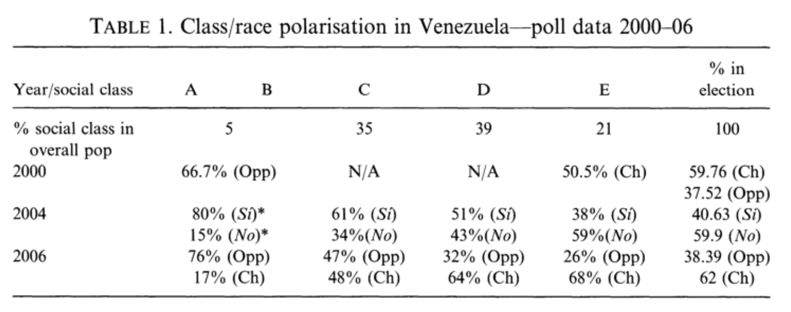
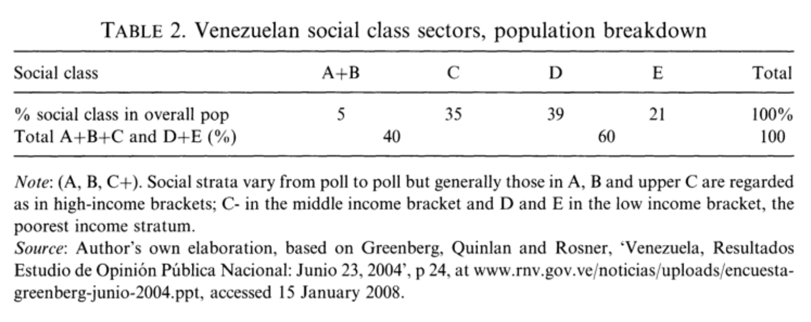
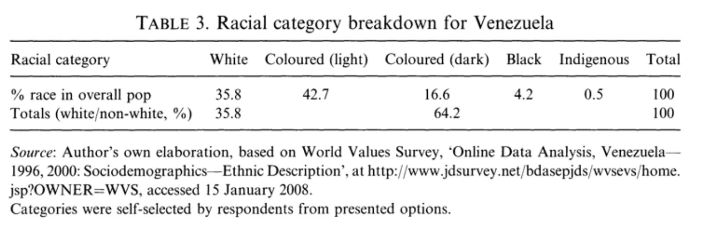
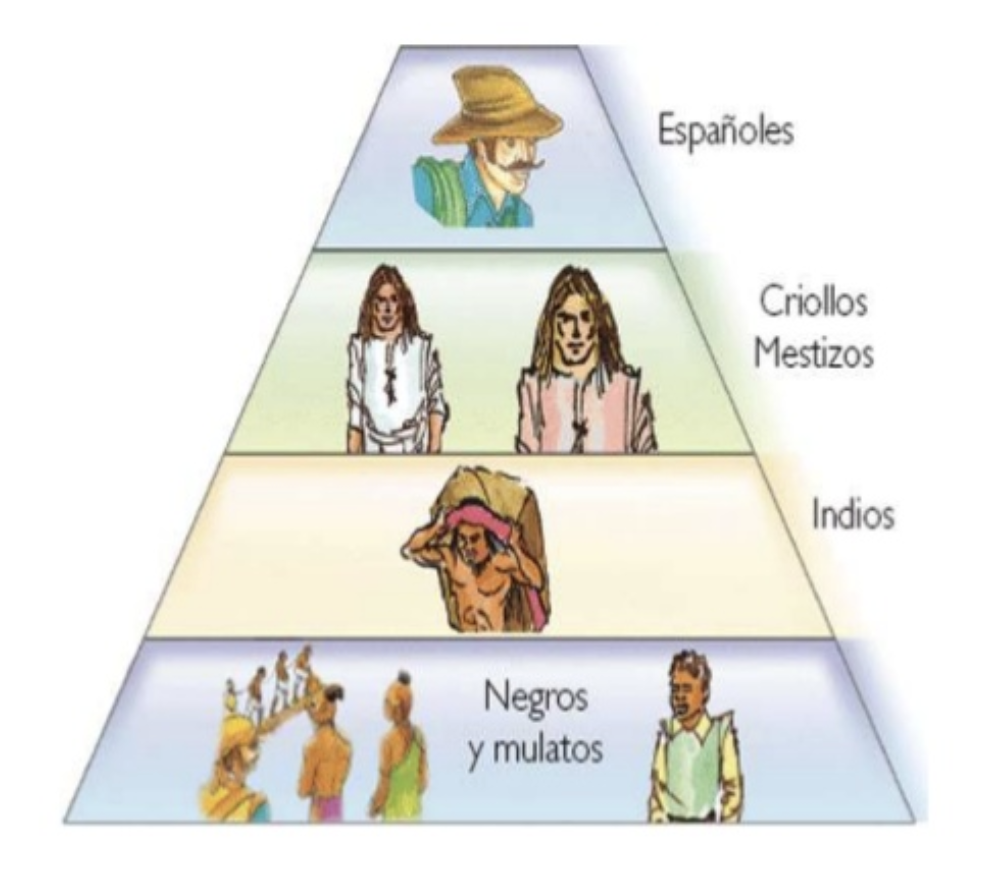

Historical Narratives of Denial of Racism and the Impact of Hugo Chávez on Racial Discourse in Venezuela
Submitted on December 19, 2019 as my Development Studies Individual Research Project with supervision from Prof. Keisha-Khan Perry
INTRODUCTION
On September 20, 2005, President of Venezuela Hugo Chávez Frías, in an interview with journalist Amy Goodman, stated that: "hate against me has a lot to do with racism. Because of my bemba (big mouth), because of my curly hair. And I'm so proud to have this mouth and hair because it's African" (Nzamba). In a country with legacies of slavery and colonialism, it seems evident that, throughout history, politicians would address the topic of racial discrimination. However, this comment by President Chávez was very uncommon for a Venezuelan politician. For centuries, Venezuelans have lived under a "myth of racial democracy," rooted in the idea that mestizaje (miscegenation) created a post-racial society, and that in Venezuela racial struggles are class struggles. By denying the fact that racism exists, or justifying it under the argument of miscegenation, Venezuelans love to pretend that "racism is a problem of the United States" or other countries of Latin America. Yet Venezuela, with the predominance of mixed-race people, does not have racism.
In that same interview, President Chávez addressed Venezuela's mixed-race history. The difference was that instead of using miscegenation as a way to justify or deny racism, he acknowledged that certain parts of our roots (African and Indigenous) had been put to the side to favor the more European side of our culture. He said:
"When we were children, we were told that we have a motherland. And that motherland was Spain. However, we have discovered later in our lives, that as a matter of fact we have several motherlands, and one of the greatest motherlands of all, is no doubt, Africa. We love Africa. And every day, we are much more aware of the roots we have in Africa. Also, America is our motherland. Africa, America, and Bolivar used to say that we are a new human race in Latin America. That we are not Europeans, nor Africans, or North Americans. That we are a mixture of races, and there is no doubt that Africa resounds with a pulse, like a thousand drums" (Nzamba).
This interview, although short, demonstrated much of the complexities of race in Venezuela. At the same time in which President Chávez conducted this interview, there were still people of the Opposition, and even Chávez supporters, that continued the narrative that racism is simply not present in the country, even though there is a racial divide between socioeconomic classes (Cannon; see Tables 1, 2 and 3 in Appendix) and that darker-skinned and Black Venezuelans[1] face various forms of discrimination (Cannon; Ishibashi; Jaimes Quero; Wright; González; Martínez; Jackson).
Growing up white in Venezuela, I had many privileges and did not face direct racial discrimination in social, professional, or academic settings due to the color of my skin. Therefore, understanding the ways that racism manifests itself in my country did not necessarily come from direct experiences but rather from observation. Growing up in school, every time we studied Venezuelan history, we would have to memorize the racial hierarchies of colonial times (see Figure 1 in Appendix).[2] Nevertheless, time and time again during my high school years, when I tried to bring up the topic of present-day racism, I would always be brushed off, mainly by white Venezuelans. I remember hearing statements such as, "if you truly think there is racism in Venezuela, then you don't understand the context of the country," and "here we use negrito[3] as a term of endearment, how can we be racist?" I always doubted how a simple "term of endearment" could ever be a justification for all the different forms of racial discrimination that exist in Venezuela; curiously, the fact that these terms even exist show that Venezuelans are not "color-blind" as some claim to be, but rather highly aware of race. The worst statement I frequently encountered was the following: "in Venezuela, there isn't racism like in the US where all they want to talk about is race. We have bigger problems." I truly believe that racism is one of the big problems in Venezuela. Until we do not talk about it, we will never be able to understand the different forms of structural inequality that exist in the country that have kept so many people living in poverty for so many years. One of the first steps– although in no way a solution for racial discrimination and inequality– was for a president to bring this debate to the forefront.
Hugo Chávez Frías, President of Venezuela from 1998 to 2013, was one of the first presidents to so openly discuss race and racial discrimination as a nationwide problem that deserves to be addressed and alleviated. During his government, he created the first Anti-Racial Discrimination Law, the Convention of Afro-Venezuelans, and added Afro-Venezuelan as a category in the census. Aside from policies, the fact that President Chávez talked about it is fundamental on a discursive level. At the same time, there certainly exists backlash against President Chávez, some even stating that he created racial resentment (Cannon 743). I find it difficult to believe that people cannot see that in a country with so many years of slavery, which translated into economic inequality for dark-skinned Venezuelans and centuries of white people in power, someone would ever deny that racism exists. It leads me to think about who this narrative is serving and who is pushing it.
While coming to Brown and gaining access to more literature and conversations surrounding the topic of race in Latin America, I finally started to have the language to better understand how to explain the racial phenomena occurring back home. Of the few studies I have found on the topic of race in Venezuela, all of them note that "there is not enough research that has been done about race in Venezuela" and that politicians up until President Chávez never gave it enough importance (Jackson; Jaimes Quero). Moreover, a lot of the research that has been done, such as the essay "¿Hay o no racismo en Venezuela?" by the anthropologist Angelina Pollak-Eltz (1993), further reinforces this idea that there is only classism and not racism in Venezuela (72), as if these two systems of oppression were not utterly intertwined. This is why I believe that furthering work on race relations in Venezuela is of utter importance.
This paper does not focus on my political support for or against President Chávez but rather aims to contribute to conversations about the ways in which Venezuelans have not seen the full picture of the racial reality of the country. I will discuss the narratives that push the idea that racism is not a problem of the country and how one specific president brought these conversations to the table. I believe that Venezuelans must understand that although social and economic inequality is one of the most significant driving factors in the crisis, race is always something that should ever be talked about if we want to achieve a better country.
As a white woman committed to racial and class equality, I feel strange telling the narratives that the people who are directly affected by this problem should be discussing. Moreover, as someone who grew up in an overall upper-middle-class setting in Caracas, I do not want to make broad conclusions about the ways in which classism and racism are felt in the country. I struggle with how to balance staying strictly with official literature published or including in one way or another all the racist attitudes and idioms I heard when growing up. Nonetheless, as will be addressed time and time again, the problem of racism in Venezuela is very rarely discussed in academia. It has only recently entered into the political arena with the Chávez regime.
Growing up and seeing the violent consequences of Chavismo, I have always been a proponent of the Opposition to President Chávez. Nowadays, six years after the death of Chávez on March 5th 2013, I can even further understand how the promises of the Socialism of the 21st-century revolution fell very short in practice and has led the country into a socioeconomic crisis with higher numbers of poverty than before and created one of the largest refugee crises in the history of Latin America (Bahar and Dooley). Having said that, I believe that, as a student who is continuously trying to better understand the history and political circumstances of Venezuela, it would be irresponsible to have a blanket statement about the Chávez regime as "bad" and about the "Democracy era"[4] that preceded it– which greatly excluded weak sectors of society– as "good" (or "better"...). I believe it is essential to act as a bridge between those strong proponents of the Opposition and the strong supporters of President Chávez, between those who have more conservative views and those who have more progressive ones on the reconstruction of the country.
In any study of race relations, situating present-day racial
discrimination into historical context is extremely important. In this
paper, I want to emphasize that Hugo Chávez's movement did not
exist in a vacuum, and it did not "create racial resentment"
(Cannon 743) as some people say. Instead, President Chávez's
racial discourse was a demonstration of the events of the
country's particular historical and political context. This
history of Venezuelan race relations dates all the way back to the XVI
century when the Spanish conquistadors came to the lands of the
Venezuelan indigenous people, brought slaves from Africa to work on
the properties, and assaulted black and Indigenous women to produce
mixed-race children who were never recognized as legitimate and did
not have the same rights as their fathers.
Nonetheless, coverage
on race and President Chávez's racial policies certainly does
exist, but it has mainly been covered by pro-Chávez and very left-wing
scholars and media, creating a complete disconnect between different
authors. On the one hand, there is a group of authors exclusively
condemning President Chávez, and then on the other, others that mainly
glorify all his work. Other discrepancies that exist are those between
the policies implemented by President Chávez and the way they were
actually carried out, and also between his discourse based on race and
class struggle and the corruption and violence that occurred during
the Chavista governments. This is why I want to try my best to read
literature from both sides and present an argument that is informed by
both archival data and contemporary research, from a variety of points
of view. My focus is on the topic of the denial of racism to start the
discussion of race in Venezuela for those who still do not want to
accept the fact that Venezuelan society is filled with demonstrations
of this prejudice.
I believe that the only way to understand what gave Chavismo its power, and the consequences of it both during and after the Chávez government, we need to ask these difficult questions about racism in the country. It has been demonstrated that ignoring the topic of race has never been productive to improve the lives of the majority of Venezuelans. Venezuelans recognizing that they are racist is essential for the liberation and improvement of the country. It would challenge a whole narrative put forth by the privileged to maintain their power, and make us analyze all the different ways in which Venezuelan elites can take a look at societal problems. I wish to do my best to center the Black Venezuelan fight of those most affected by the racial discrimination which will be examined in this paper. Moreover, I believe that given the scarcity of literature on this topic and Latin American and female (especially Venezuelan) scholars discussing the topics of racial inequality in Venezuela, this Capstone project will be a valuable contribution.
Structure of the Capstone
In this Capstone, I aim to 1) examine the narratives of denial of racism and situate them in a historical context, 2) view the measures and discourse during the government of Hugo Chávez Frías on the topic of race, and 3) analyze the importance of addressing this topic and the future implications of this research. Examining racial and social inequality in communities and countries around the world is at the core of the Development Studies degree, which aims to study these structural and historical systems of power and inequality, to be able to understand the developing world, and how to improve it. This is why, for my final Capstone project, which serves as the culmination of my Development Studies concentration, I have decided to look further into the topic of race in Venezuela. Every step of the process is essential to continue asking the question, "why have we denied racism, and who does this narrative serve?" to emphasize that the voices of the most oppressed must always be heard and centered.
Part I will focus on three main narratives of denial of racism: 1) the whitening and miscegenation argument; 2) the "we only have classism, not racism" narrative; and 3) the comparison with the United States as a form to negate Venezuelan racism. Part II will dive into the different forms in which the Chávez government used racial rhetoric, I will explore his self-narrative, some of his speeches, and the specific government policies that were installed to alleviate racial inequality. I will also discuss the shortcomings and harmful or unintended consequences of Chavismo towards achieving more racial equality. The Conclusion section of this paper will focus on summarizing the findings and the importance of this research, while also including a reflection of what it means to do this research under the present-day situation in Venezuela.
PART I: NARRATIVES OF DENIAL OF RACISM THROUGHOUT VENEZUELAN HISTORY
Since the XIX century, in Venezuela, there has been a constant denial of racism through a variety of arguments that I will explore during this Capstone. An important question to keep asking ourselves is: who is pushing this narrative, and who does it serve? Moreover, what is the historical context under which present-day racism occurs? To be able to understand present-day Venezuela, it is important to understand the way its past shaped its social and structural systems of power and oppression.
Often when Venezuelans discuss racism in the country, we are met with the attitude of "there are bigger problems." As Humberto Jaimes Quero says, "people trick themselves into thinking that 'resolving the topic of race is the matter of people with social resentment who want to sow discord in a harmonious country who has gotten over this issue'" (34). I believe that questioning racist and racial prejudice is essential to be able to achieve a better society and deal with the extreme inequality affecting this country. This "myth of racial democracy" did not appear out of nowhere, but rather the political elite pushed it as a way to prevent social discontent in regards to race, viewing it as "un-Venezuelan" (Wright 126). In the present century, many Venezuelans deny that they ever had a racial problem, especially one like that of the United States, with its segregationist practices.
Nevertheless, blacks in Venezuelan society occupy an inferior social position. In the minds of many white people, society has a chromatic scale that links darker skin and African characteristics with a lower-class status (Wright 5). The official doctrine of nondiscrimination and lack of prejudice have permeated all levels of Venezuelan thinking on the subject (Wright 127), leaving little space to challenge this narrative. In Venezuela, studies on racism in the media and other social fields are rare. As for racism in the media, we can only name the publications of Wright (1990) and Charier (2000). Charier, who examined the attitude of a vast majority of Venezuelans to deny the very existence of racism, metaphorically explains this problem as a result of an "ideological trap" of the miscegenation discourse. This invisibility, also internalized by the “blacks” themselves, is the cause, according to Charier, of the absence of activism, research, and awareness about/against racism in Venezuela (Ishibashi 34).
Understanding the history that led to these racist attitudes, allows us to reflect on so many classist power structures that have left Venezuelans, similar to other Latin American countries, with a never-ending tale of political instability in which the elites bend the law to their favor and corruption abounds, as well as a lack of equal opportunities and social mobility.
"Mejorando la Raza": Racism through Miscegenation and Blanqueamiento
One of the most influential and most enduring forms of racism in Venezuela, which is a legacy of the racial hierarchy in colonial times, is the idea of whitening. In colonial times, there was a clear separation between the races. Nonetheless, there was much miscegenation during colonial times, result of forced sexual relations under slavery. After the abolition of slavery and the granting of rights to pardos, there was a general acceptance of the mixed-race population This rejection of blacks and the indigenous peoples continued into the 20th century through the “ideology of mestizaje (miscegenation), also known as the myth of democracy or racial equality, which served to mask racial discrimination and the socio-economic situation of the Afro-Venezuelan and indigenous communities” (Herrera Salas 76). In this ideology, the white European was identified as 'the civilizing agent, making Africans and the indigenous and their descendants largely invisible.' This ideology also “'denied the existence of social classes,” and instead looked to a cultural homogenization, spread primarily through the educational system (Herrera Salas 77).
Since this shift in the representation of Venezuela as a "mixed-race country," there has been a double narrative: there is a denial of racism, but at the same time, a constant privileging of whiteness. So, one of the most insidious forms of racism has not been through the explicit exclusion from institutions but through the never-ending implicit notion that whiteness is better and equal to money, purity, cleanliness. This suggests the corollary that poverty blackens (Wright 44). The idea that "money whitens" is not only a figure of speech or the result of an analysis of structural classism and racism. During colonial times, Pardos (mixed-race people) could literally buy their way into whiteness with something called Real Cédula de Gracias al Sacar.[5] Moreover, under the umbrella that everyone is mixed race, it is important to point out that there is still a hierarchy within the "mixed-ness." Roger Lancaster (1992) points out that colorism might be a bigger problem in Venezuela (Jaimes Quero 50).
Jaimes Quero (31) also mentions an idea by Venezuelan playwright José Ignacio Cabrujas, which is that Venezuela operates under something called the "Estado del disimulo" ("State of dissimulation") (Cabrujas), under which Venezuelans live under a condition of double morale and ambiguity (31). Cabrujas says:
"The concept of State is simply a "legal trick" that formally justifies appetites, arbitrariness, and other forms of me da la gana (I'll do what I feel like it). The State is what I, as a caudillo, as a simple man with power, determine to be a State. Law is what I decide to be Law. With the case variants, I believe that this is how the Venezuelan State has behaved, from the time of Francisco Fajardo (XVI century) until the current presidency of Dr. Jaime Lusinchi (1987). The country has always had a precarious vision of its institutions because, deep down, Venezuela is a provisional country."
It might be strange if we are talking about racism, to include what the State means for this Venezuelan playwright, but the conclusions he comes to also apply to the problem of race directly. Venezuelans, as a postcolonial country, always had an unstable view of institutions. Even if it is supposed to be a certain way, the people in power could always bend the rules to their advantage. From this concept, Jaimes Quero presents us with the argument that there are still two types of history: the "official history" (that which exists in laws, official documents, among others) and the "real history," which is the way events take place (34). This distinction is of considerable importance when analyzing race relations because, in the official documents, there was racial equality; yet, in reality, racial prejudice prevails to this day. Needless to say, official history, laws, and documents passed to shape the "real" events, so I do not mean to discredit them in any way. However, it is essential to ask ourselves how much implicit racism (Jaimes Quero 54) exists when explicit racism is not permitted? Also, did the elites ever actually abide by the rules of the official history?
Jaimes Quero talks about how the official document after the Federal War, which states that all Venezuelans are equal in race, sex, clearly did not solve the problem. "Even rocks know this" (40) is the expression that he uses to support this, meaning that it is common knowledge. After Venezuela's Independence in 1830,[6] rules about the rigid racial hierarchy of the colonial times (see Figure 1 in Appendix) were revoked and nowadays we learn about it in school as if it is a benevolent thing of the past, even though it has real consequences on the lives of so many people, which definitely permeate into contemporary society, were revoked. In practice, although there were no segregation laws, the white elites could still bend the rules in their favor. Whiteness has maintained a synonym of power, money, and class, and the blackness of poverty and other negative connotations. Thus, it was always going to be more difficult for Black, Mulatto,[7] Indigenous, Zambo[8] Venezuelans to enter into more "exclusive" economic activities, social clubs, etc. Winthrop Wright presents us with a list of adjectives that were associated with blackness, the product of colonial times and slavery, that are still present against Black Venezuelans today: "stupidity, improvidence, conceit, contentiousness, pretentiousness, ugliness, laziness, dirtiness, sensualness, and slyness" (Wright 44).
The three Presidential terms of Antonio Guzmán Blanco (between 1870
and 1888) sought out to make Venezuela more European, more French, and
therefore more “advanced” and “cultured” in infrastructure but also
the racial composition of the population. Then, in the early 1900s,
there was a more official call for the whitening of the population, by
attracting European immigrants to Venezuela, and by affecting the
virtual disappearance of blacks over an extended period of time. This
movement, while not overt or institutionalized as in the United
States, slowly led the Caracas-based elites who ruled most of
Venezuela to agree that they could indeed improve their nation's
population by whitening (Wright 43).
In the 1950s, Venezuelan
dictator Marcos Pérez Jiménez (1953-1958) even explicitly included in
his Plan for the Nation "and official plan for
'whitening' the population. As he pointed out in his own
words:
"Within the big ideas of the national ideal, it has been said, with full knowledge, that it is necessary to improve the… ethnic component. We have several physical and hereditary defects that must be corrected ... Therefore, among the questions of the New National Ideal, the first necessity is to mix our race with European people ... looking for selective immigration. In simpler words, we want the very best we can find" (Jackson 27).
This process of mestizaje and the denial of racism within Venezuela continued into the liberal democratic Punto Fijo regime, installed definitively in 1958. The Punto Fijo regime was designed to avoid conflict and antagonism, to encourage conciliation and to negate the polarization of Venezuelan society along with class, and consequently, along racial lines. Access to voting, education and health services, and an expanding middle class, temporarily ameliorated the worst excesses of class/race divisions in Venezuela, forging even further the myth of a classless, non-racist, united Venezuela. Yet, as time went by, the economic model began to be exhausted under the weight of a slump in oil prices and increased external borrowing.
From Black Friday in February 1983 onward, when the government of Luis Herrera Campins dramatically devalued the bolivar in the face of a slump in oil prices and massive capital flight, the regime began to crumble. On the economic level, for example, Venezuelans saw their standard of living plummet. Between 1990 and 1997, according to the UN, per capita income fell from US$5192 to $2858, and Venezuela's human development index from 0.8210 to 0.7046. With this economic crisis, the vision of a united, non-racial, and classless Venezuela lost its mythical power. Racist discourse began to re-emerge among the upper and middle classes because Afro-Venezuelan and indigenous people became the scapegoats for Venezuela's economic failure (Cannon 736).
In 1998, with the arrival of Chávez to Miraflores (the presidential house in Caracas), talk about racism in Venezuela changed. The thesis that corroborates the existence of discrimination gains traction, and the debate about racial inequality in the nation starts to take place for a variety of reasons: first, the President put the topic on the public agenda; second, the Chief of State, whom many times identified himself a member of the Indigenous or Black community, denounced being a victim of discrimination by the opposition and other political actors; third, there were definitely ‘objective’ historical reasons to think that it wasn't a ‘resolved’ issue" (Cannon 736). Yet, going back to the idea of the official versus the hidden history of racism, it is important to reflect on this dichotomy during Chávez's presidency. Although it was in a different direction–instead of denying the fact that racial discrimination existed, he mentioned it and took steps to alleviate it. Nonetheless, it is important to question the results of President Chávez’s racial discourse and policies, and whether people of color now truly have more rights and opportunities than before. The impact of President Chávez will be further discussed in Part II.
Going back to the impact of miscegenation and Whitening policies in Venezuela, is the narrative that whiteness is better, and that Black and brown Venezuelans should always aspire to be mixed with white people. Humberto Jaimes Quero talks about this idea in length in his book Mejorando La Raza (2012). The title of the book translates to "Improving the Race," which is the phrase used by Venezuelans to signal that Blackness and Indigeneity should be diluted and erased in the pursuit of whiteness to improve social standing (Wright 12).
While conducting the research, I came across an article in one of the most famous satirical sites of Venezuelan society today, called the Chigüire Bipolar. The article is titled "Lady who says, ‘improve the race,’ says Venezuelans are not racist." The satirical article says:
A 59-year-old white woman says: "I'm so surprised how in the 21st century, there are still developed countries like the United States with these ugly problems of racism. Just awful! Here in Venezuela, one can complain about everything except that. Of course, I do tell my children that they have to mejorar la raza (improve the race); they cannot bring me a black grandson home. But it's not because of racism, but because one sees those photos of some families on December 24 and, I can't even tell you. If you see my sofa, it is dark, so a little black boy there would not appear in the photo; maybe someone will even sit on top of him. But for me? Racism? Please, racism, nothing! How are we going to be racist in this country? Everyone in this country knows a black man, or has a black friend, or has had black employees. I have had black friends myself, and they have never robbed me– as far as I know, at least. There are even some great black people! Of course, as my mother says, ‘black only with coffee.’ But we are not racist in Venezuela”, says Mrs. Roldán, while receiving a phone call in which she used the expression "negro no es gente" ("black people aren't people")" (my translation).
The irony is that this parody resembles a narration of a regular
afternoon conversation amongst upper-class Venezuelans, which says a
lot about the ingrained racial beliefs of certain sectors of
Venezuelan society. Nevertheless, on a more positive note, I thought
that the fact that this critique was included in such a wide-reaching
comedy site shows that a lot more people are putting forth the idea
that whitening and certain idiomatic expressions are, in fact,
racist.
I also came across a video of a light-skinned Venezuelan
woman saying that Peruvians should not be xenophobic against
Venezuelans, but rather grateful that Venezuelans are migrating there,
using the expression mejorar la raza once again.
She says:
"Peruvians are like a hybrid, a mixture, a mutation between laboratory and indigenous mice with Asian hairstyles ... they should be delighted that we go to their land not only to please their eye but to improve the race" (Notishow).
Of course, this woman's comments are not representative of the ideas of all Venezuelans, and she was thoroughly criticized (although mainly by Peruvian newspapers). Notwithstanding, the idea of "improving the race" has been so ingrained into Venezuelans that they have been internalized and exported these to other places. These racist ideas have even mutated from saying that Blacks must improve by mixing with whites, into the idea that Venezuelans have achieved an optimal racial mixture that is attractive, and others should aspire to it.
"Aquí no hay racismo, hay clasismo": The Separation of Race and Class
Related to the myth of racial democracy and the idea that a mixed-race country achieves a "post-racial society," comes a prevailing narrative in Venezuela, which states that race and class exist separately. The historical context presented in the previous section on miscegenation in the country helps us better understand how there was a hierarchy of races based on a class structure. As explained in the previous section, despite views to the contrary, racism still exists and operates in Venezuela, and this racism has deep roots in the country's colonial past. In Venezuela, as in much of the rest of Latin America, concepts of race and class fuse, whereby, generally speaking, it is believed that the darker a person's skin, the poorer that person will be (Cannon 734).
To explain the relationship between the concepts of race and class, Robert Miles and Malcolm Brown (2003) pose the argument that the two are interlinked because they both perpetuate inequality. They state: “Racism is a denial of humanity and a means of legitimating inequality, particularly inequality explicit in class structures” (11). Thus, the concept of race and racist practices persist, wherever there are colonial and/or asymmetrical power relations. This has been extremely significant in the formation of discourse in which "the West" represents the "superior and civilized" and the "rest", the "inferior and the wild" (Hall 202). This stereotyped dualism has been internalized in American societies to marginalize Afro-descendants and indigenous people within each national State (Ishibashi 56).
Moreover, Miles and Brown explain that the way that class and race interact will depend on the class position of those practicing racism because lived experience of the world and its consequent problems vary with class position (105). Most importantly, given that he forms and expressions of racism have had varying interaction with economic and political relations in capitalist and non-capitalist social formations, any discussion of racism must therefore be historically specific as it is knowable only as a result of historical analysis rather than abstract thinking (Miles and Brown 119). Thus, any discussion on racism in Venezuela and its relationship to class must always be looked at in the historical context of the country to be properly understood, which is what is my goal in this Capstone.
Thinking back to the period after the Independence of Venezuela from Spanish rule, Republican Venezuela retained or assumed the characteristics of colonialism, resulting in the Latin American white settler elite having a Eurocentric approach to society and nation-building, and a deep mistrust of native and African conceptions of community and society (Gott 273). In consequence, the white settler elites of Latin America had more in common with the elites of Europe and North America than with their fellow Latin Americans, leading to an ingrained racist fear and hatred of the white settlers, alarmed by the continuing presence of the expropriated underclass. Struggles between rich and poor in Latin America were, therefore, not only class-based but also race-based, a fact that as Gott notes that “even politicians and historians of the Left have ignored, preferring to discuss class rather than race” (273).
There are differing views in terms of the relationship between class and race in Venezuela, and whether they constitute racism. For the anthropologist Angelina Pollak-Eltz (1993), classism is much more predominant in Venezuela, given that racial consciousness does not truly exist. In her paper "¿Hay o no racismo en Venezuela?" she says:
In summary, it can be said that my thesis of lack of racial awareness is proven. Studies show that, in the private sphere, there are sometimes some racial prejudices. However, they never manifest themselves aggressively, but as a class consciousness or pronounced ethnocentrism. In the new middle class, racial relations lack major problems, and are shaped according to the official motto of racial democracy (74).
Pollak-Eltz states that class consciousness is found in all popular segments and influences relationships and social norms at all levels. The rural population is defined as "peasants," the new urban proletariat calls itself "working class," people living in slums consider themselves "marginalized." Everyone knows his position in Venezuelan society. There is the talk of: "You are the rich; we are the poor." However, no one, not even the government, speaks of "black peasants, black working-class, black outcasts" (Pollak-Eltz 72). This essay was written before the rise of Chavismo, and reading it nowadays, we can observe how racial discourse pushed by the government has indeed changed.
Nonetheless, I differ with this anthropologist's view that race is not a notable element of Venezuelan social stratification. I argue that classism perpetuates racism and vice versa; given that both phenomena perpetuate inequality, they require the same level of analysis and alleviation policies. Nonetheless, given the narratives of denial of racism that mainly serve the elites (who are predominantly white) in power, there has been little done to alleviate racism, until recent years. This invisibility of oppressed groups engenders the symbolic effect of tying those of the minority in the lowest stratum of the economic, political, social, and cultural hierarchy within the national State, causing the phenomenon of "symbolic annulment" (Gross 61).
Whiteness still carries ideas of purity and high classness, especially when choosing whom you bring into the family, a legacy of the Whitening policies, and the idea of "mejorar la raza." High-class marriages still aspire to maintain whiteness to preserve social standing, economic assets, and living standards. In this way, Pollak-Eltz does assert that in Venezuela, the use of class consciousness hides racial prejudice (72). Thus, the fact that high-class marriages strive to perpetuate whiteness, is automatically a racist statement that blackness would make them appear more "lower class." On a more anecdotal level, something that has surprised me, is that in the countless times I have heard upper-middle and upper class Venezuelans say that "there is no racism, but rather classism" there is rarely an attitude of even trying to alleviate this problem of classism. On the contrary, it is more or less accepted as a reality of the country, which might explain the widespread support for President Chávez's class-based policies, which will be explained in Part II.
Of course, acceptance of the myth of racial democracy always has depended on the perspective of the observer. For their part, white elites do not consider themselves racists because they do not use race as a means of oppressing blacks. They have never intimidated the black minorities by the use of force and violence, nor have they resorted to institutionalized or legal forms of discrimination as a means of social control. Furthermore, they attribute their negative ideas about blacks to economic and cultural factors, not race. They believe that poverty, stemming from the shared experience of the blacks' slave ancestors, and not race, explains the plight of most poor blacks (Wright 127).
Comparison with the United States
Another way to perpetuate the myth of racial democracy in Venezuela is by comparing Venezuelan race relations to those of the United States. The argument that comes up a lot in the literature on contemporary racism in Venezuela, and in articles and anecdotal conversations on the topic, is the idea that Venezuela is not racist because it did not experience the same type of racism like that of the United States.
The absence of institutional segregation and violent aggression between "racial groups" in Venezuela generates the attitude of many Venezuelans not to recognize the existence of racism in this society (Cannon 736). The idea goes: given that Venezuela did not have violent white supremacist groups such as the KKK or overt segregationist policies, and different races live together "in harmony," we cannot say there is racism in Venezuela. It seems like Venezuelans– or white and light-skinned Venezuelans, I would say– only want to consider explicit acts of violence as racism, without questioning the more "subtle" ways in which racism presents itself as a part of everyday life. The word "racist" is feared, and there is a sense of pride for being able to say negrito (a diminutive word for negro, which means Black in Spanish) as a term of endearment.
Yet as we know, there is so much more to racial discrimination that being able to say the word negrito (which used for anyone who is slightly darker-skinned or mixed-race, not necessarily only Afro-Venezuelans). Racial discrimination is about the violent ways in which Black Venezuelans are excluded from economic activities that would permit social mobility. Moreover, there is "real" violence against darker-skinned Venezuelans as well, through excessive use of police force and nowadays, xenophobic and racist violence, which disproportionately affects Black Venezuelans.
In his book Slave and Citizen, Frank Tannenbaum (1946) analyzes this difference between race relations in Latin America (the regions colonized by the Spanish and Portuguese) and the United States. One difference he states is the way that slavery was managed. Tannenbaum argues that:
The contrast between the Spanish and Portuguese slave systems and those of the British and the United States was very marked, and not merely in their effect upon the slave, but even more significantly upon the moral status of the freed man. Under the influence of the law and religion, the social milieu in the Spanish and Portuguese colonies facilitated black passage from slavery to freedom. The older Mediterranean tradition of the defense of the slave, combined with the effect of Latin-American experience, had prepared an environment into which freed blacks from slavery could fit without visible handicap. Slavery itself carried no taint (88).
Another difference discussed pretty often is that what defines a Black person in Venezuela and in the United States is very different. In contrast to race relations in the United States, where a drop of black blood makes an individual black from the viewpoint of the dominant white group, Venezuelans only consider those with very dark skin and African features as black (Wright 3). As a matter of fact, according to some accounts, by the end of the colonial era 60% of Venezuelans had African origins and, of the 25% classified as white, probably some 90% had some African ancestry (Ewell 14). In Venezuela, a Black person is someone with very dark skin and negroid somatic features. morenos (a term generally used for light-skinned Black people), Trigueños ("golden morenos") and pardos (mixed-race) do not necessarily identify as black (Pollak-Eltz 66). Pollak-Eltz argues that in Latin America, racial discrimination is limited primarily to the private and individual spheres, and is never expressed openly and loudly. On the other hand, "institutionalized racism" and racial segregation in the United States is defined in terms of the unequal distribution of prestige and political and economic powers and, at present, is a very important political topic (65).
By defining racism in terms of the virulent, hate-filled type of discrimination and segregation found in the United States, Venezuelans like to call racist behavior "un-Venezuelan," and, since gaining their independence, have eschewed the violent and overt racism practiced by their white neighbors in the North. Given that they regarded the closed system of race relations found in the United States as "real" racism, they usually overlooked any signs of discrimination in Venezuela (Wright 126). This very dangerous phenomenon has perpetuated the idea that conversations about racial inequality are not important in the country.
Is this Denial True? Examining Forms of Racism in Venezuela
Many forms of racism persist in Venezuela. Winthrop Wright believes that, contrary to the mainstream belief that Venezuela is a mixed racial democracy, the general quality of life for African descendants reflects their unequal status within the nation's democracy (33). In this section, I want to illustrate some of the ways in which racism persists in Venezuela, including testimonies by Black women.
Language
Many Venezuelan popular expressions show an ingrained sense of racism that is never challenged. As previously mentioned, Venezuelans love to say that there is no racism because whiter Venezuelans can use the term "negrito/a" as a form of endearment, and it is not frowned upon. Apart from the fact that shows that Venezuelans are not "color-blind," there are many other sayings that illustrate racist behavior.
Some of these expressions, and their translations are: “mejorar la raza” (improve the race), “igualado” (feeling equal), “trabaja como negro” (he works like a Black person), “niche” (a word used for tacky, which has its roots in a term for Black people), “tierrudo” (full of dirt, when used to describe something of bad taste), “marginal” (marginal), "negro tenías que ser," (you had to be Black), "este sol es sólo para negros" (this sun is only for Blacks). The list could go on and on, but I have chosen the most common ones. These expressions show the legacies of slavery and the perpetuation of racial inequality and prejudice in the Venezuelan imaginary.
Perceptions of Racism by Black Venezuelans
While conducting research for this Capstone, I had the chance to visit the Universidad Central de Venezuela and check out some theses written by students on the topic of racism in Venezuela. One of the best, in my opinion, by Jetzabel Martínez (2001), is called "Cómo percibe la mujer negra la discriminación racial en Venezuela" (How does the Black woman perceive racial discrimination in Venezuela?). This thesis includes interviews to Black women, asking how the perceived racism in Venezuela. The responses were varied, but they all expressed that, in one way or another, black people in Venezuela are seen in a particular way. Many were happy to say that they were proud of the Black heritage, but that they could be perceived differently or as inferior in one way or another, by white Venezuela.
The following are some excerpts of the testimonies of Black Venezuelan women taken from Martinez's thesis (my own translations):
Woman 1:
P: Do you believe there is racial discrimination in Venezuela?
R: Yes, I believe there is because there are clubs and even Universities where people of color are not accepted. Nonetheless, the discrimination is not based on the color of your skin, but on your social and economic position, hierarchy. There is an eradication engine, that is how I would describe it.Woman 2:
P: Have you ever heard the term "mejorar la raza" (improve the race)?
R: There are a lot of people, even our relatives, that when they see you with a black man they tell you: what are you doing with that black guy? Your kids are going to be even darker than you! And I do not agree with that, because each person likes different things and the most important is the feelings. But yes, if we apply logic, people who are morenos and want "to improve the race" should look for someone with lighter skin. But if you have affection for morenos, here in Venezuela there is space for everyone and morenos have a lot of virtues. Being moreno is not a reason for being eradicated from a country. If not, how would Africans do? How could they exist? God created all these races because if we were all equal it will be very boring. In fact, people from Europe like Latinas a lot, even if it is a black woman from a very far town and with no culture, they like her for being black. In our society, in our families, everybody says "improve the race", they say "do not bring home a black guy. And that is because they care about what people say. But I tell them that what really matters is who you are as a person.Woman 3:
P: Have you ever heard the term "improve the race"? What does it mean for you?
R: Yes, I have heard that expression. It means mixing colors and finding a person that you like, but at the same time thinking about how your kids will look like. Is thinking about the future, because you know that if you marry a black person your children will be black. Improve the race is mixing colors so they will look like "peacock feathers".Woman 4:
P: Do you believe there is racial discrimination in Venezuela?
R: Well, I would say that has to do with some people that like to talk about race, they carry that in their blood, maybe it is genetic, but yes, some people reject people of color, but I really don't know for sure why.Woman 5:
P: What have you heard that they say?
R: Ayyy ese negro! That is what they say in order to discriminate against them. But I am not sure if they really feel that way. But yes, when I am walking in the street I have seen people not being nice and when they see a black person they tell them Get out of here! using ugly words, with superiority and offending them. Sometimes I think that maybe those people simply had a bad day and because they are mad they treat bad other persons. I have also seen that with women from Haiti that work selling fruits. They come here for a better life but they are sometimes wanted by the police and they are not well accepted.Woman 6:
P: How do you believe black people live here in Venezuela?
R: It seems like in our country there are no problems related to being black making you different from a white person. But there are some occasions where I have felt that there are differences. It depends on the place where you are. It is not the same being at La Lagunita Country Club, at La Candelaria, Gato Negro or Caño Amarillo.
P: But how would that make a difference? How would people’s life change based on that?
R: More discrimination, because everything depends on where you live. For example, where I live, we do not have discrimination. But I know that racism is not a collective thing, it depends more on every person. I have always express my opinions as conditionals because even though there is not generalized racism, there are regions and persons who discriminate very strong. There are people you always want to remind you, in a bad way, that you are black.Woman 7:
P: Is there discrimination in Venezuela?
R: Yes, there is. Overlapped, saved, hidden, as you want to call it. The simple fact that people say "Here comes el negrito” with that distinction, is a form of discrimination. Why not say "Here comes Pedro"? Let me try to explain myself with an example. I traveled with my University to Guatemala and Mexico with a black woman. During the trip, she got everybody's attention because of her color. We even joked that nobody looked at us. And we realized that the color of her skin was the reason for discrimination here in Venezuela, but in those other countries, she felt accepted and happy.
Another thesis, by Freddy González (2002), "La etno-discriminación hacia el afrodescendiente y las conductas de interacción social" (Ethno-discrimination against afrodescendants and behaviors of social interaction), focused on conducting surveys and interviewing Venezuelan high school students to understand racial prejudice in that particular social context. Some of the questions asked included how Blacks were perceived in terms of cleanliness, beauty, speech, language, facial expressions, approachability, and friendliness. González concludes that: there does exist ethnic discrimination en every component of social interaction, verbal and non-verbal (131). Furthermore, frequently, in the groups studied, Black students were perceived as discriminatory. Moreover, given that Blacks were discriminated against, there was a "mirror effect" in which whites were almost all more accepted by their peers (132).
Other forms of racism expressed have been colorism and endorracism. Some argue that colorism might actually be a bigger problem in Venezuela, given that in Venezuela there is more of an attitude towards phenotype than about racial categories (Jaimes Quero 50). Moreover, endorracism is expressed by many Black Venezuelans in both explicit ways (such as openly acknowledging a desire to "mejorar la raza") and more implicit ways such as following euro-centric beauty standards (Ishibashi 51).
Media
One of the best ways to understand how racism manifests itself in Venezuelan society is by analyzing Venezuelan media. Jun Ishibashi (2003) and Humberto Jaimes Quero (2012) are some of the most notable scholars to research race dynamics in Venezuelan media. Ishibashi analyzes the content regarding advertising, soap opera, and modeling. He believes that it is worth starting with this area, which is exposed to the daily observation of the multitude of Venezuelans since the great problem of racism in Venezuela is the very denial of its existence by the majority of society (35). He notes that the great difficulty in counting “black” participation in these materials is the ambiguity of the “black” definition in Venezuela (38). For example, model agencies are companies in which there is a greater distinction of "types" developed according to the following examples: Nordic, European, blond, Latin, Venezuelan (or Creole), brown, brunette, black, Indian, oriental (Asian) (43), showing the emphasis on phenotype previously mentioned. This explains why he uses quotation marks around racial categories.
Here are some of the testimonies presented by Ishibashi that show examples of racism in Venezuela media:
The Publicist GB, vice president of customer services of the agency “J”, explained: "Many times castings are influenced by the racial factor: exclusion of a type ... If a product is aimed at a high or medium-high social class it is difficult to put a dark person there ... At the same time, if in one piece there are roles of people who serve others or those of people of low and medium-low socioeconomic status, then if it is allowed to use the darker casting" (47).
Photographer D.A. stated that: "It is incredible that there is here a black or brunette woman with yellow dyed hair. It is like thinking "I have to be white; I have to level up." That is achieved by the color of the skin. You are valued by the color of the skin ... Here you are a classist: what you care about is where you are from, where you live, how much you earn, what car you have and ... many times the color (of the skin) is linked to the classes" (49).
When referring to a photograph of the Sudanese model Alek Wek, E.B., director/partner of the agency "B" said: "Her physiognomy resembles that of very humble people. You could use it in a very specific situation, such as a field scene, where the townspeople interact with other main characters" (50).
H.Q., one of the few afro-descendant publicists demonstrated his self-criticism of this phenomenon, both from the point of view of the publicist and the consumer: "The world of advertising and television is very stereotyped. The consumer public was born with stereotypes and assumes it as such. If there was awareness about it, we would not buy products whose image excludes us. We do not learn to want images that reflect ourselves. In other words, we never end up being Venezuelans" (51).
In other words, in everyday practice, there are "black" people with purchasing power related to a product and other "white" individuals outside the target. However, in the constructed world of advertising, the "black" individual is synonymous with the poor, and the "white" is the rich (Ishibashi 49). Ishibashi finds that in the media analyzed, he argues, there is an acute sensitivity to distinguish the "typology," which in the Venezuelan context has become synonymous with the popular term "race" (51). Within that phenotypic hierarchy, the "black" is treated as a "type" marginalized and excluded within the symbolic democracy of the media in Venezuela. Media professionals justify this treatment according to their "racial" marketing theory. That is, the purchasing power of the market segment represented by the "black" type is small, and also, those in this segment aspire to appear less "dark" when practicing their daily consumption habits. This form of justification for the reproduction of the racial stereotype conceals the existence of the Eurocentric and prejudiced beauty canon. In the media in Venezuela, the "black" represents being the "ugly", the "unsophisticated," and the "poor" (Ishibashi 51).
In contrast, President Chávez's discourse is one of being proud of Venezolanidad, including (and even emphasizing) its Indigenous and African roots. Now that we have established that despite the narratives of denial of racism in Venezuela, racism is still persistent in many forms, we will go onto the next section. This section describes the forms in which Hugo Chávez Frías, president of Venezuela between 1998 and 2013, addressed the topic of race.
PART II: HUGO CHÁVEZ AND RACIAL DISCOURSE
Hugo Chávez Frías came to power in 1998, in the context of a severe economic crisis, and distrust in the bi-partisan Punto Fijismo,[9] which was supposed to guarantee democracy, but had left the country's less privileged classes with few social safety nets. From the beginning of his campaign, Hugo Chávez emphasized a very class-based socialist discourse, and promise of change in the country, under a doctrine called Socialismo del Siglo XXI.[10] During his government, the oil prices went up, being able to sustain many social missions, which improved, for a bit, the quality of life of poor Venezuelans. Nonetheless, the mismanagement of funds, corruption, and erosion of the private sector, also led Venezuela to one of the biggest economic (and currently refugee and humanitarian) crises of present-day Latin America (Bahar and Dooley).
Apart from class-based discourse, President Chávez spoke very openly about the importance of tackling problems of racial inequality. As president, Chávez addresses issues of race that previous political leaders ignored. He addressed these issues of race, not only in his use of racial rhetoric but also in the form of policies explicitly directed at redressing racial discrimination. Moreover, President Chávez viewed race and class as intertwined rather than separate entities. These policies included the recruitment of Afro-Venezuelan leaders, legislation against racial discrimination, educational reform, and voter registration reform that led to the mass enfranchisement of Afro-Venezuelan voters and political leaders within the Chávez administration (Jackson 11).
The following section of the Capstone will focus on the ways in which President Chávez achieved this, and how this negates the theses of denial of racism described in Part I. The objective is not to analyze the economic consequences of Chavismo, but rather to take a look and learn from the discourse of Hugo Chávez which, seeing how popular he was, we can say represents the needs of so many Venezuelans. Moreover, I also seek to illustrate the formal policies created by the regime to alleviate these problems, while reflecting on what it says about Venezuela that these policies did not previously exist.
It is important to note that, despite the fact that racial inequality has not a topic historically discuss in Venezuela, before Chávez, organizations by Black Venezuela striving for Afro-Venezuelan rights, such as La Red Afrovenezolana (the Afro-Venezuelan Network), the Unión de Mujeres Negras de Venezuela (Venezuelan Black Women Union), and the Fundación Afroamérica (Afro-American Foundation), did exist. The narratives of denial of racism have been, in many ways, more an instrument of the elite than a generalized understanding of the world by all Venezuelans. Nonetheless, Chavismo, given its more populist discourse and emphasis on the majority of Venezuela, was the first government to make racial equality an essential part of the political agenda. Just because he was the most vocal president on the matter, we must not undermine the work of Black Venezuelans before him, and their voices must always be heard.
Hugo Chávez's Personal Background and Narrative
In the introduction to this Capstone, I showed an interview in which President Chávez stated that "hate against him had a lot to do with racism, because of his bemba (big mouth) and because of his curly hair, but he was so proud to have this mouth and hair because it is African" (Nzamba). Following, I will present several quotes from some of President Chávez's speeches, which demonstrate the ways in which he often used his personal story and narrative to show experiences of racism that he perceived throughout his life. Through these testimonies, he always made a point to fight against euro-centric narrative by incorporating Black history and cultural events into Venezuelans lives and education. Moreover, very often, he mentioned the beauty of the mixture of races, but instead of using it to deny racism, President Chávez acknowledged that some races are still more oppressed than others. Ethnically, Chávez considered himself pardo– of Amerindian (Indigenous), Afro-Venezuelan (Black), and also Spanish descent– similar to many Venezuelans (Jackson 11), so his discourse was very relatable.
One of the main ways in which President Chávez communicated with the Venezuelan people was through his speeches and his talk show called Aló Presidente (Hello President). For this Capstone, I want to present some of the most valuable quotes I have found in his speeches, concerning the topic of racial equality, and the perception of white Venezuelans towards Black Venezuelans (my translations).
On March 21, the International Day for the Elimination of Racial Discrimination, Chávez started with a reference to Black popular culture, and then described the beauty of Afro-descendant people, and the struggles they have encountered for centuries:
"Black power. With Alí Primera we started this program Aló Presidente, here at the Miraflores Palace, this Sunday, March 21, and ... And precisely we wanted to start this Sunday with Alí Primera and his song, and his message collected from the depth of the roots of our Afro-American people, Afro-Venezuelans, because today is precisely March 21, the International Day for the Elimination of Racial Discrimination that is celebrated worldwide. From here, from Venezuela, from all these spaces, from this Government, from its own bosom, from its own essence, from the internal force that this revolution has, especially the moral force, the moral force that this revolution has, we sympathize throughout this planet earth with the struggles of centuries, with the struggles of today and the struggles of always against any kind of discrimination" (President Chávez on Aló Presidente N° 185, on March 21, 2004).
In a speech on National Children's Day, President Chávez described the legacies of racism experienced by his ancestors, the fact that he is mixed-race, and his ideas on racial equality:
"Afro-Venezuelans, Afro-Venezuelans. Look, brothers, this is justice, because racism is still alive, it's another monster! Racism, like people of color who is the same as my father, and my grandfather was even darker! I had an African grandfather, a legend that is in the family and a lot of honor, I pulled more hair see? Hey, because of a combination of them, my mom is white, but my dad is black." Now, there was a lot of racism and there is still a lot of racism, as if blacks are worth less than white, heh, heh! It turns out that we are all the same" (President Chávez on Aló Presidente N° 362, on July 18, 2010).
The next three quotes from other weekly Aló Presidente shows, where Cháve discussed racial prejudice against him and other negative stereotypes associated with Blackness.
"The dominant culture was introducing that use, right? Associating the word "black" with the bad and even with crime. There are many racism theorists who has raised and some still claim that black is associated with crime, the malandraje is black..." (President Chávez on Aló Presidente N° 228, on July 10, 2005).
"Why do they hate me? Well, I think it has something to do with racism, but in the end it is ideological. And well, what happens is that they want to take care of their pockets, because what they used to steal before is not possible to steal any more" (President Chávez on Aló Presidente N° 365, on October 10, 2010).
"We have seen how the police were killing people, the Ley de Vagos y Maleantes does anyone remember it? When they grabbed the poor and especially the blacks - racism "- saying: "He is a bum" and that person was just standing in a corner. They sent them to El Dorado, there, to die there. There was no right for defense, they were killed, tortured, kidnapped by the government, we must remember those terrible times. But Venezuela will never live that tragedy again, never again, with the help of God!" (President Chávez on Aló Presidente N° 354, on March 21, 2010).
The common thread in all of these speeches is that President Chávez wants to show the importance and beauty of Blackness while calling out the negative perceptions and racism that exists towards black Venezuelans. Nonetheless, his political rhetoric was perceived as "divisive" by many in that he framed his references to discrimination and inequality in terms of "us" versus "them" ("them" being the rich and the white).
Policies
Previously, we have shown how President Chávez tackled racism on a discursive level. I believe that one of the most lasting consequences of Chavismo is that he codified anti-racism policies, and appreciation for Black history and culture into Venezuelan laws. Under the idea that "racism does not exist" in Venezuelan society, there were very little legislation before Chávez that addressed the topic of racial discrimination. Moreover, although it may not have been a popular view or the perspective of the majority, to implement anti-racist laws targeting institutions meant to recognize that institutionalized forms of racism and cultural exclusion existed.
Some of the laws and measures that were promulgated during the Chávez government were the following (Jackson 18):
- The first Anti Racial Discrimination Law (2011) in Venezuela. Its purpose, stated in Article 1 is "to establish the appropriate mechanisms to prevent, address, eradicate and punish racial discrimination in any of its manifestations, guaranteeing to any person and groups of persons the enjoyment and exercise of their rights and duties enshrined in the Constitution, laws, treaties, covenants and international conventions relating to human rights, signed and ratified by the Republic."
- The mass enfranchisement of Afro-Venezuelan voters due to Article 56 of the 1999 Constitution which guarantees rights for all citizens to have free registration with the Civil Registry Office.
- The recognition of intercultural education in the 1999 Constitution.
- The inclusion of many clauses on Indigenous rights in the 1999 Constitution in Chapter VIII (Rights of Native People), which was also of great importance for the recognition of the rights of different ethnic groups in the country.
- The 2005 presidential decree that approved the Presidential Commission for the Prevention and Elimination of all Forms of Racial Discrimination in the Venezuelan Education System.
- The 2009 Organic Law of Education included, for the first time, the recognition of Afro-descendants by stating that the Venezuelan identity includes those who are Afro-Venezuelan; it also added that Venezuelan education should be based on "the principles of sovereignty and self-determination of peoples, with the values of local identity, regional, national, with an indigenous vision, Afro, Latin American, Caribbean, and universal."
- The addition of the category of Afro-Descendant in the 2011 census, which allows the Venezuelan government to recognize its diversity and respond accordingly to the specific needs of different racial/ethnic groups, for key social questions to be answered, including how many Afro-Venezuelans there are, where they live, their living conditions, and their public opinion, among other vital statistics (Jackson 21).
Lastly, a significant accomplishment of the Chávez government was achieving more representation of Black voices. Within the Chávez administration, Afro-Venezuelans occupied meaningful posts as legislators, ambassadors, and assemblymen. For example, Aristóbulo Istúriz was the first black person to be vice-president of the National Assembly (Jackson 19).
It is important to note that we still do not have proper data to know if these policies actually improved racial discrimination against Black Venezuelans. First, in recent years under the Maduro government, Venezuela has escalated to a very severe economic crisis in which racial equality has not been an important part of the Presidential agenda. Moreover, a problem with the Venezuelan Census is the difficulty to define, and self-identify within, racial categories because, as described in the previous sections, definitions of Blackness and Afro-Venezolanidad vary greatly. For example, in his study on race and class polarization in Venezuela, Cannon describes his experience with demographic data in Venezuela, which he believes is in large part due to the racial prejudice that exists against Afro-Venezolanidad:
It is of no surprise then that in surveys done on ethnicity within Venezuela, those who identify themselves as 'Afro-Venezuelan' are in a small minority, of much less significance than those who identify themselves as white. For example, in the 2007 World Values Survey in Venezuela, 4.2% of respondents identified themselves as Black-Other/Black, whereas 35.8% identified themselves as White/Caucasian White. Nevertheless, the survey also provides a number of intermediate options, such as 'Colored-Dark' (16.6%) and 'Colored-Light' (42.7%). Indigenous groups, on the other hand, represent only 0.5% of the population but, despite their small numbers, have important symbolic value. Apart from the highly subjective nature of such categories (what is the actual physical difference between Black and 'Colored-Dark'?), not to mention the high probability that those who identify themselves as 'Caucasian-White' have some element of Black or Indian blood, the important point to note is that the majority of Venezuelans, roughly 64%, identify themselves as non-white. It is important also to point out that, in a social context where the Black is highly undervalued, if not despised, the probability of Venezuelans not identifying themselves with that ethnic category is doubtless increased (737).
Apart from looking at the institutional measures taken by President Chávez to alleviate racial inequality, other studies have analyzed whether race and popular support for Chávez are correlated, which is another interesting way to understand the way popular demands for a President of color manifest.
"El Pueblo" and President Chávez
In the following section, I will explore how popular support for President Chávez was impacted by race and the different ways in which the topic of race was discussed by both supporters and opponents of Chávez. I will also set forth a series of questions that have been left unanswered by this Capstone, but that require further research to better understand the complexities of race within the historical context of Venezuela, especially Chavismo.
Popular Support for President Chávez
In her book Race and Politics in Venezuela (2014), Victoria Marie Jackson, conducted a series of statistical analyses to observe the correlation between race and popular support for President Chávez. It is important to note that she used the term Afro-Venezuelan for both the Black and Mulatto categories because otherwise the population sample for these two categories alone would not be large enough (Jackson 30). The use of this category is a practical strategy used by statisticians across Latin America, because they have observed that, despite the difference in how Blacks and pardos (mixed-race) people identify on the census, they experience similar socio-economic material conditions. Hence, they put the categories together to facilitate analysis. The results indicated that even while controlling for a host of variables identified by the previous literature, being Afro-Venezuelan was a significant factor for being in support of Chávez as president. Afro-Venezuelans were indeed more likely to think that the government was doing a good job. Gender, age, and income, however, were not significant in determining support for the president (Jackson 32).
On a more qualitative account, Jesus "Chucho" Garcia, the founder of La Red Afro Venezolana, in his essay "The Political Status of Afro-Venezuelans in the Bolivarian Revolution," states that:
The emergence of Afro-Venezuelans into national and international public spheres is primarily related to decades of hard work at the margins of Venezuelan society… The dramatically unfolding Bolivarian Revolution under the commanding and controversial leadership of the energetic and charismatic Hugo Chávez, President of Venezuela, has certainly helped Afro-Venezuelans to amplify, although not formally position, their demands for full inclusion in national development in the nation's consciousness… Hugo Chávez's strong leadership and the stated participatory democracy programs of the Bolivarian Revolution could, if fully and broadly enacted in collaboration with Afro-Venezuelans, achieve unprecedented progress (32).
The Opposition and President Chávez
One of the reasons why analyzing Chávez is so important, is that, in many ways, he represented a way for the vast majority of Venezuelans that had been forgotten or left behind during the XX century to express their needs through the figure of a person: El Comandante (The Commander) Chávez. In other words, "Chávez became an 'instrument of the collective" (Cannon 741), and his movement is described as populist.[11] Central and crucial to this ideology is the concept of el pueblo (the people) (741), which became a unifying term, but at the same time a way of othering lower social classes in Venezuela.
After analyzing support for President Chávez, I believe it is also very important to look at racial discourse conducted by Chavismo's opponents, given that President Chávez's discourse celebrating race and class contrasts significantly with that emanating from the Opposition parties. Ever since the beginning of Chavismo, the Opposition voices very valid concerns about the nation: the erosion of democracy, the rising economic crisis, exchange control, media censorship, corruption, and the expropriation of goods, to name a few. Nonetheless, the Opposition's discourse many times contains racist and classist elements– sometimes subtle, other times more overt.
Within Opposition members and leaders, the term pueblo has many times been used in a derogatory way, projecting an image of the pueblo being easily manipulated and incapable of thinking rationally. For example, the vote for Chávez has been described as an "emotional" vote, while votes against him are considered "rational" (Francia 109). Similarly, a leader within the Opposition political party Primero Justicia (Justice First), once qualified those who vote for Chávez as "inhabitants" not "citizens," implying that they acted without thinking (Gómez 4).
When conducting field work to Venezuela in 2002, Cannon found that some people rejected Chávez because, according to them, Venezuela needed "gente preparada," (educated and trained people), which for them was not achieved by President Chávez despite the fact that he has a BSc in military science and studied for a Masters in Political Science (Cannon 742). Furthermore, some opposition analysts, while recognizing this racism and classism within the opposition ranks, go all the way to blame Chávez for this situation of "racial resentment." For Patricia Marquez of the elite Instituto de Estudios Superiores de Administracion (IESA), for example, it is Chavez who has "stirred up the beehive of social harmony" (Márquez 86). In other words, many members of the Opposition believe a socio-racial harmony existed before Chavez started talking about race and racism.
Limitations and Backlash
When studying the forms in which President Chávez combatted racial inequality, many questions come to mind: Did the racial policies play out as planned? Did President Chávez make the debate of classism/racism more polarized or more inclusive? Did the political repression during Chavismo have a racial bias? What is the racial consciousness among Venezuelans post-Chávez? Did people actually identify as Afro-Venezuelan, or was there still a tendency to identify as moreno or negro? Were there any instances in which President Chávez was criticized for using racial discourse that was detrimental to uniting Venezuelans, using whiteness and upper-class status as an insult to completely discredit the work of the Opposition? Are there any instances in which Chávez was inconsistent in his work about race? Finally, despite inconsistencies in dismantling class-raced inequality, why was Chavismo so appealing to the majority of the black and brown population, and did this popular support change over time? Although not in the scope of this project, all of these questions are very important, and I hope will be studied in further research.
How Does This All Negate the Historic Denial of Racism?
In Part I of this Capstone, I sought to provide a historical context of race relations in Venezuela, while explaining the many ways in which racial concerns have been undermined, and policies of whitening and racial assimilation have been pushed by the elites under the assumption that "whiteness is better." From interpreting Chávez’s discourse and policies and the literature concerning race in Venezuela and Latin America more generally, we can conclude that Venezuela is, in fact, a racial state. Venezuelan issues of race have polarized the country and threaten its political stability, and through his mixed-race identity, President Chávez challenged these divisive notions of race (Kozloff). I chose to analyze Hugo Chávez because he was a very influential figure in Venezuelan and overall Latin American leftist politics to push forward concerns about racism in the region.
In many ways, Chavismo was not ideal, and through corruption and mismanagement of funds left the country under an economic crisis that unfortunately leaves many poor and predominantly black Venezuelans (the people that the Revolution sought to help) in conditions of precarity and poverty. Nonetheless, this analysis was not in the scope of this Capstone, and my main argument was to show that the myth of racial democracy is indeed a myth given the many forms of racism that still persist in society– such as class-based racial discrimination, the perpetuation of whitening, racism in the media and popular expressions, etc.– and the widespread popular support for President Chávez's racial discourse supports this. Despite Chavez's approach toward redressing racial inequality in Venezuelan society, it was insufficient, and the country is moving back in the direction of denial where neither anti-racist discourse or policies are taking place or made a priority. Aside from commemorating Dr. King's speech on the North American holiday, Martin Luther King Jr. Day, current President of Venezuela Nicolás Maduro has done little to nothing in addressing the needs and concerns of the Afro-Venezuelan population (Jackson 11).
CONCLUSION
In Fernando Coronil's analysis of the Venezuelan state in his book The Magical State (2008), he describes a "collective amnesia that envelops the dominant memorialization of Venezuelan history" (3). In other words, he describes how Venezuelans always seem to forget their political past. I believe something similar happens with race. In present-day Venezuela, people seem to forget that it was once a highly race-stratified colonial society that only became an independent state in 1821. People also very matter-of-factly choose to ignore the blanqueamiento (whitening) techniques or view them as something positive. My analysis of racial discourse and policies in Venezuelan society challenges this view and reminds us that we cannot and should not forget the past of Venezuela, because understanding it is vital for every social justice cause moving forward.
During this Capstone project, I have aimed to explain certain narratives that are present in the Venezuelan imaginary that negate or undermine the existence of racism in Venezuelan society. As the discourse and policies of Hugo Chávez Frías, and many other studies, show, this "myth of racial democracy" is truly a myth. My aim in this Capstone was to challenge what we accept through the idea of "así son las cosas" (a Venezuelan phrase that means "this is how things are") and put forth the idea that, although Chavismo has had its problems, race should not be ignored but rather incorporated into the Venezuelan political discourse moving forward. Possibilities for future research include looking more into the role of gender and sexuality and its interactions with race and class in Venezuela.
A question I keep coming back to is: How much did President Chávez's policies really accomplish if the economic consequences[12] created by the measures of his government have created one of the largest socio-economic crises of the 21st century in Latin America, and this crisis disproportionately affects Black Venezuelans? For example, there are many news articles that show how colorism and racial prejudice affect Venezuelans of color in the current refugee and migration crisis (Corrales; Voice of America; NBC News). From this, I want to repeat: my aim with analyzing Chávez's racial discourse is not to endorse every single aspect of his government, but instead try to understand what we can learn from the needs of the most marginalized of Venezuelans (black and brown people) that he very firmly put forth. In other words, just because we do not agree with a particular president or political party, it does not mean that there is not much to gain by learning from the discourse and demands of this leader or political party. Real lives are affected by class-based and racially-based structural inequality.
It is not about Chavismo versus Opposition anymore; it is not about left versus right. It is about how more privileged Venezuelans–those who have the chance to study in top universities are part of this privileged group– can work on understanding how to rebuild the country. If it is true what we say, that the country has been "torn to pieces," then we must rebuild it by taking into account not only class but also racial inequality from the ground up.
As has been shown in this paper, racism in our country is the legacy of colonial rules and subsequent strategies of whitening and the widespread denial of racism. These aspects of Venezuelan history cannot be erased. It is difficult to look at these problems only from an academic lens while people continue to die every day, but doing this work is very important if we want to strive for a more equal and just country. I hope others are motivated to do the same. One significant way to challenge racism is with white and upper-middle-class Venezuelans, where the narrative of the denial of racism is most persistent. It is always important to challenge racism politically through policies, but also every day challenge the ways in which racial discrimination is felt socially. If I can encourage more privileged Venezuelans to question their internalized beliefs about race and push academics to remember the question of race when producing work about Venezuela, I think this Capstone will have achieved an important goal.
I have been writing this Capstone in the context of 2019, in the middle of protests over socio-economic problems throughout all of Latin America. Also, this has been a year in which Venezuelans have become one of the most significant refugee crises in the world, hyperinflation has not stopped, and hunger has only soared (Bahar and Dooley; Kurmanaev). The country is in an all-time crisis, and there is so much political instability that there are two parallel governments (Anderson; Barbaro). Moreover, the economy of Venezuela is predicted to continue its sharp decline. It is estimated that the Gross Domestic Product (GDP) may fall by up to 40% by the end of 2019, and projections for 2020 forecast another 10% drop (Econoanalítica), which will have significant consequences for the most vulnerable Venezuelans, who are those living in poverty.
At the beginning of this Capstone project, I mentioned how people say how racism is not an "important enough" topic to discuss in Venezuela. I want my main takeaway to be that talking about race and ceasing to deny racism as a problem in Venezuela is of great importance to improve the lives of the majority of the population. Right now, everyone talks about someday "rebuilding the nation." So, let us take this as a challenge that starting now, any new structure created should incorporate racial equality policies from the beginning instead of going back to "reverse the damage." To anyone who is in power now or in the future, I say: we cannot deny the impact of race on Venezuelans' lives. It is important to talk about race.
APPENDIX

Table 1: Class/race polarization in Venezuela, poll data 2000-06 (Cannon 2008)

Table 2: Venezuelan social class sector, population breakdown (Cannon 2008)

Table 3: Racial category breakdown for Venezuela (Cannon 2008)

Figure 1: Summary of racial stratification of colonial Venezuela ("Sociedad Colonial")
BIBLIOGRAPHY
- "Aló Presidente." Todo Chávez, http://www.todochavez.gob.ve/todochavez/#categoria=1.
- Anderson, Jon Lee. “Venezuela's Two Presidents Collide.” The New Yorker, The New Yorker, 25 June 2019, https://www.newyorker.com/magazine/2019/06/10/venezuelas-two-presidents-collide.
- Bahar, Dany, and Meagan Dooley. “Venezuela Refugee Crisis to Become the Largest and Most Underfunded in Modern History.” Brookings, Brookings, 10 Dec. 2019, https://www.brookings.edu/blog/up-front/2019/12/09/venezuela-refugee-crisis-to-become-the-largest-and-most-underfunded-in-modern-history/.
- Barbaro, Michael. “One Country, Two Presidents: The Crisis in Venezuela.” The New York Times, The New York Times, 25 Jan. 2019, https://www.nytimes.com/2019/01/25/podcasts/the-daily/venezuela-nicolas-maduro-juan-guaido.html.
- Cabrujas, José Ignacio. "El Estado del disimulo: Entrevista realizada a José Ignacio Cabrujas en 1987, por el equipo de la revista Estado & Reforma," http://moebius77.com/docs/CABRUJAS-1987-El-Estado-Del-Disimulo.pdf.
- Cannon, Barry. "Class/Race Polarisation in Venezuela and the Electoral Success of Hugo Chávez: A Break with the past or the Song Remains the Same?" Third World Quarterly, vol. 29, no. 4, 2008, pp. 731-48, www.jstor.org/stable/20455069.
- Charier, Alain. Le Mouvement Noir au Venezuela: Revendication identitaire et modernité. Paris, L’Harmattan, 2000.
- Chávez Frías, Hugo. Seis discursos del Presidente Constitucional de Venezuela. Caracas, Ediciones de la Presidencia de la República, 2000, p. 21.
- Coronil, Fernando. The Magical State: Nature, Money, and Modernity in Venezuela. Chicago, University of Chicago Press, 2008.
- Corrales, Javier. “Responses to the Venezuelan Migration Crisis: A Scorecard.” Americas Quarterly, 11 July 2019, https://www.americasquarterly.org/content/responses-venezuelan-migration-crisis-scorecard.
- “Ecoanalítica: Economía Venezolana Seguirá Cayendo En 2020.” El Estímulo, https://elestimulo.com/elinteres/ecoanalitica-economia-venezolana-seguira-cayendo-en-020/.
- "El Pacto de Punto Fijo." Venezuela Tuya, https://www.venezuelatuya.com/historia/punto_fijo.htm.
- Ewell, Judith. Venezuela: A Century of Change. Stanford University Press, 1984.
- Francia, Nestor. Antichavismo y Estupidez Ilustrada. Caracas, Rayuela Taller de Ediciones, 2000, pp. 109-111.
- García, Jesus "Chucho". Afrovenezolanidad e inclusión en el proceso bolivariano. Caracas, Fundación Editorial El perro y la rana, 2016, http://www.elperroylarana.gob.ve/wp-content/uploads/2017/04/afrovenezolanidad_e_inclusion_en_el_proceso_bolivariano.pdf
- Gómez, E. "Sólo la presión social puede liberar conciencias." _El Universal*, 13 Feb. 2002.
- González, Freddy. "La etno-discriminación hacia el afrodescendiente y las conductas de interacción social." 2002. Universidad Central de Venezuela, Honors thesis.
- Gott, Richard. "Latin America as a white settler society." Bulletins of Latin American Research, vol. 26, no. 2, 2007, p. 273.
- Gross, Larry. "Out of Mainstream: Sexual Minorities and the Mass Media." Gender, Race, and Class in Media: A Text Reader, London, Sage, pp. 61-69.
- Hall, Stuart. "The West and the Rest: Discourse and Power." The Formations of Modernity, Cambridge, Polity Press, pp. 185-225.
- Herrera Salas, Jesús María. “Ethnicity and Revolution: The Political Economy of Racism in Venezuela.” Latin American Perspectives 32, no. 2, March 2005, pp. 72–91, doi:10.1177/0094582X04273869.
- “In Latin America, Fears of Rising Discrimination, Xenophobia against Venezuelan Migrants.” NBCNews.com, NBCUniversal News Group, 18 Oct. 2019, https://www.nbcnews.com/news/latino/latin-america-fears-rising-discrimination-xenophobia-against-venezuelan-migrants-n1068536.
- Ishibashi, Jun. "Hacia una apertura del debate sobre el racismo en Venezuela: exclusión e inclusión estereotipada de personas 'negras' en los medios de comunicación." Políticas de identidades y diferencias sociales en tiempos de globalización, Caracas FACES - UCV, 2003, pp. 33-61
- Jackson, Victoria Marie. Race And Politics In Venezuela. Victoria Marie Jackson, 2014.
- Jaimes Quero, Humberto. Mejorando La Raza. Caracas, 2012.
- “La Real Cédula De Gracias Al Sacar.” Venezuela en Retrospectiva, Mar. 21 2016, https://venezuelaenretrospectiva.wordpress.com/2016/03/21/la-real-cedula-de-gracias-alsacar/.
- Kozloff, Nikolas. "Hugo Chávez and the Politics of Race." Venezuela Analysis, 2005, https://venezuelanalysis.com/.
- Kurmanaev, Anatoly. “Venezuela's Collapse Is the Worst Outside of War in Decades, Economists Say.” The New York Times, The New York Times, 17 May 2019, https://www.nytimes.com/2019/05/17/world/americas/venezuela-economy.html.
- Laclau, Ernesto. "What's in a word?" Populism and the Mirror of Democracy, London, Verso, 2005, pp. 324-329.
- "Ley Orgánica Contra la Discriminación Racial." Asamblea Nacional de la República Bolivariana de Venezuela, 19 Dic. 2011, http://monitorlegislativo.net/wp-content/uploads/2014/11/Ley-Org%C3%A1nica-Contra-la-Discriminaci%C3%B3n-Racial.pdf.
- "Ley Orgánica de Educación." 15 Aug. 2009, Ministerio del Poder Popular para la Comunicación y la Información, http://www.minci.gob.ve/wp-content/uploads/2018/08/Ley-Org%C3%A1nica-de-Educaci%C3%B3n.pdf.
- Márquez, Patricia. "Vacas flacas y odios gordos: la polarización en Venezuela." Realidades y Nuevos Caminos en esta Venezuela, Caracas, Ediciones del Instituto de Estudios Superiores de Administración, 2005, p. 86.
- Martínez, Jetzabel. "¿Cómo percibe la mujer negra la discriminación racial en Venezuela?" 2001. Universidad Central de Venezuela, Honors thesis.
- Miles, Robert and Malcolm Brown. Racism. London: Routledge, 2003.
- Millard, Peter, et al. “A Timeline of Venezuela’s Economic Rise and Fall.” Bloomberg, Bloomberg, 16 Feb. 2019, https://www.bloomberg.com/graphics/2019-venezuela-key-events/.
- NotiShow. "Venezolana dice que ellos vienen a mejorar la raza peruana, Mari Show." Youtube, February 2018, https://youtu.be/7nDCQGiahAo
- Nzamba. "President Hugo Chavez, proud to have some african features (September 20, 2005)." Youtube, July 2012, https://youtu.be/c3cforZoJWA
- Pollak-Eltz, Angelina. "¿Hay o no racismo en Venezuela?" Estudios Antropológicos de Ayer y Hoy, Universidad Católica Andrés Bello, 2008, pp. 65-74
- Rex, John. Race Relations in Sociological Theory. London, Routledge, 1970.
- “Rising Tensions as Colombia's Displaced and Venezuelan Migrants Converge.” Voice of America, https://www.voanews.com/americas/rising-tensions-colombias-displaced-and-venezuelan-migrants-converge.
- Sanjek, Roger. "The Enduring Inequality of Race," Race, Rutgers University Press, 1996, pp. 1-27.
- "Señora que dice «mejorar la raza» asegura que venezolanos no son racistas." Chigüire Bipolar, 16 Nov. 2016, https://www.elchiguirebipolar.net/16-11-2016/senora-que-dice-mejorar-la-raza-asegura-que-venezolanos-no-son-racistas/.
- “Sociedad Colonial.” Historia De Venezuela Primer Año, 27 Aug. 2015, http://petionhistoria1.blogspot.com/2015/08/sociedad-colonial.html.
- Tannenbaum, Frank. Slave and Citizen: The Negro in the Americas. Beacon Press, 1946.
- "Venezuela (Bolivarian Republic of)'s Constitution of 1999 with Amendments through 2009." Constitute Project, https://www.constituteproject.org/constitution/Venezuela_2009.pdf?lang=en.
- Wilper, Gregory. "The Meaning of 21st Century Socialism for Venezuela." Venezuela Analysis, Jul. 11 2016, https://venezuelanalysis.com/analysis/1834.
- Wright, Winthrop. Café con Leche: Race, Class, and National Image in Venezuela. University of Texas Press, 1990.
- It is important to note that racial and ethnic discrimination in Venezuela is not only against Black Venezuelans but also towards the Indigenous population, the Muslim population, immigrants from China and more, but for the purpose of this paper I am choosing to focus on the Black Venezuelan population.
- The hierarchy was the following: Spanish Whites, Criollo Whites (born in Venezuela), Mestizos (White and Indigenous) and Pardos (mixed-race), Indigenous, Mulattos (Black and White), and lastly Blacks and Zambos (Black and Indigenous).
- Negrito is a diminutive term for Black, and it is used in Venezuela as a term of endearment. Yet, it is not used exclusively for Black people and is many times used for anyone who is not White, such as light-skinned mixed-race people.
- The post-dictatorship period in Venezuelan politics, between 1958 and 1999, that was characterized by the rule of the political parties Acción Democrática (AD, Democratic Action) and Comité de Organización Política Electoral Independiente (COPEI, Social Christian Party).
- The "Real Cédula de Gracias al Sacar" was promulgated by Carlos IV in 1795, and was granted to the mixed-race people of the American territories of the crown, removing their socially inferior origin, by paying a sum of money proportional to the African blood that will carry through the veins. Thus, and after previous payment, many pardos in Venezuela were socially equated with whites, being able to ascend socially, enter certain educational institutions, and even hold public office. This Royal Decree caused discomfort among the Mantuana population of Venezuela (the white upper class), as they saw with concern that the browns could displace them as the ruling class (Venezuela en Retrospectiva).
- In Venezuela's history, the process of Independence occurred between 1810 and 1830. The "first step towards Independence" was in 1810 with the resignation of the Spanish Governor Vicente Emparan; the most important battle (Batalla de Carabobo) occurred on June 24, 2021; and the separation from the "Great Colombia" and Independence of Venezuela took place in March of 1830.
- Mulatto refers to a person born from a Black parent and a white parent.
- Zambo refers to a person born from a Black parent and an Indigenous parent. Very racist narratives have been pushed against Zambos, described as "the worst race of them all" (Wright 47).
- The Puntofijo Pact was a governance agreement between the Venezuelan political parties AD, Copei, and URD, signed on October 31, 1958 after the overthrow of Dictator Marcos Pérez Jiménez that same year. This pact allowed the stabilization in the first years of the representative democratic system, which lasted four decades. Yet, after 1960 URD backed out and gave rise to the era of bi-partisanship between AD and COPEI which in spite of its positive consequences for the country, also had issues of institutionalized corruption and mismanagement of funds (venezuelatuya.com).
- 21st century socialism is a concept formulated in 1996 by the German-Mexican sociologist Heinz Dieterich Steffan, that gained traction when President of Venezuela Hugo Chávez Frías used it to describe the Venezuelan Bolivarian Revolution. In a 2006 speech, Hugó Chávez states: “We have assumed the commitment to lead the Bolivarian Revolution towards socialism and contribute to the path of socialism, a 21st century socialism that is based on solidarity, fraternity, love, freedom and equality” (Wilpert).
- "Populism is a chain of demands whose unity is expressed through one element of those demands In other words, the totality is expressed through a singularity and the extreme form of a singularity is an individuality. The group, the totality of the populus, becomes symbolically unified around an individuality, in this case the leader. The 'leader' therefore 'is inherent in the formation of a people'" (Laclau).
- The expropriation of goods, the lowering of oil production, the subsidies which developed into scarcity, the high amount of corruption in the exchange control dollars and imports/exports, the irresponsible handling of the budget assuming the oil price would always stay as high, etc. (Millard et. al).